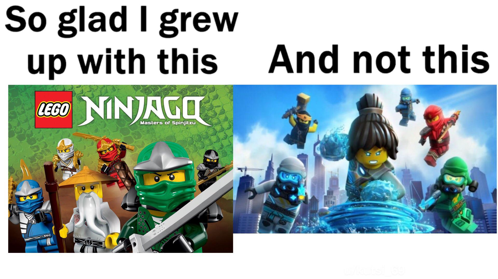

Hvilken ninjago sesong er best, og hvilken er værst?
Her er en link til en av mine andre proskjeter, som går dypere i diskusjonen om beste skurk/villan i ninjagos historie
Det er mye dikusjon om hva ninjago sesong er den dårligste, hvor mange ofte snakker om sine forstyrrelser og har ofte fordommer for de nyeste sesongene. Men er de så sårlige som folk skal ha det til? Er deres hat i mot de nyeste ninjago sesongene bygget på noen annet mer uksjent?
